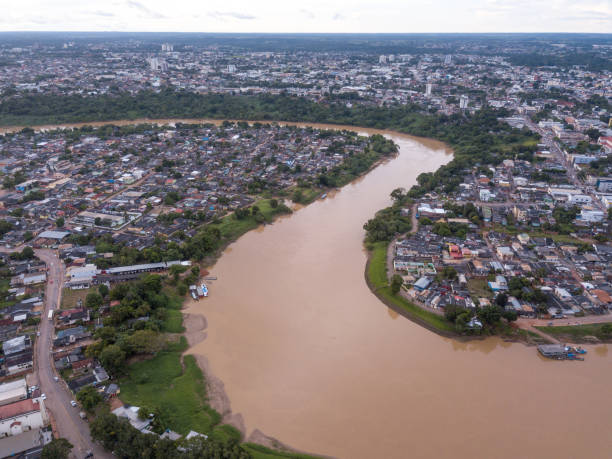

O Acre é o estado mais ocidental do Brasil, conhecido por sua rica biodiversidade e pela Floresta Amazônica. Sua capital, Rio Branco, é um importante centro urbano da região. O estado destaca-se pelo ecoturismo, com atrações como o Parque Nacional da Serra do Divisor e o Mercado Plácido de Castro. Em 2023, o Acre atraiu 25 mil viagens, movimentando cerca de R$ 48,9 milhões na economia estadual. Além disso, o estado possui uma rica cultura indígena, com festivais que fortalecem suas tradições e geram renda para as comunidades locais.
 Voltar